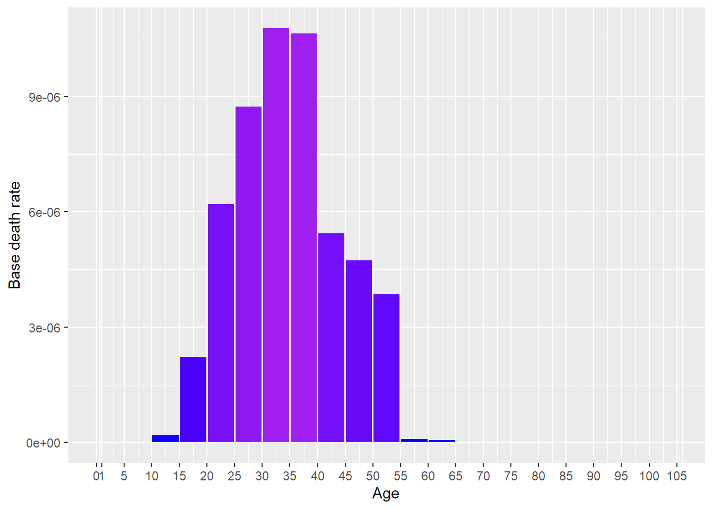
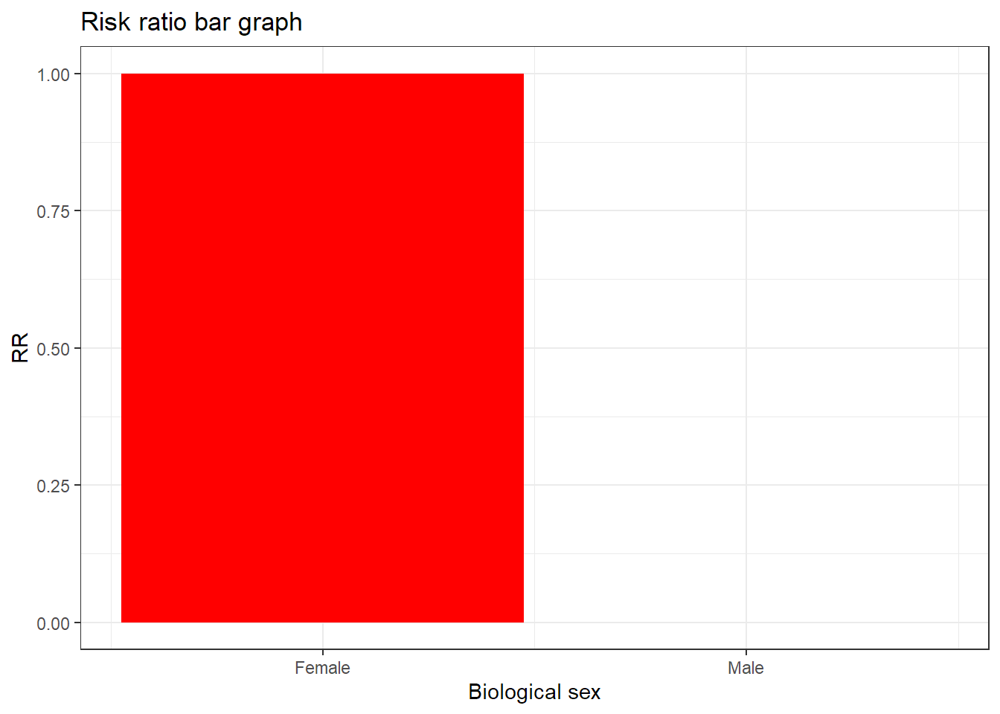

[auto-generated file]
Childbirth is a death cause. It means that there is a certain probability that one dies from this.
Categories
Childbirth is part of the following death cause categories
Risk factors
In the model Childbirth has the following risk factors
Number of deaths
In 2014 Childbirth was responsible for 0.043% of the deaths in the US. Below is a plot of how prevalent the death was for different ages (Xu et al. 2016)

Definition
The definition of dying from Childbirth is to get any of the following ICD codes as the main cause of death on one’s death certificate. The percentage is the proportion of the deaths from Childbirth who falls under the ICD code
O (100.0%)
- O0 (2.5%)
- O00: Ectopic pregnancy (1.4%)
- O001: Tubal pregnancy (0.44%)
- O009: Ectopic pregnancy, unspecified (0.97%)
- O02: Other abnormal products of conception (0.088%)
- O020: Blighted ovum and nonhydatidiform mole (0.088%)
- O03: Spontaneous abortion (0.53%)
- O031: Delayed or excessive hemorrhage following incomplete spontaneous abortion (0.088%)
- O035: 1 Genitl trct and pelvic infct fol complete or unsp spon abort Genital tract and pelvic infection following complete or unspecified spontaneous abortion (0.18%)
- O037: Embolism following complete or unspecified spontaneous abortion (0.088%)
- O038: Other and unspecified complications following complete or unspecified spontaneous abortion (0.088%)
- O039: Complete or unspecified spontaneous abortion without complication (0.088%)
- O04: Complications following (induced) termination of pregnancy (0.088%)
- O048: (Induced) termination of pregnancy with other and unspecified complications (0.088%)
- O05 (0.18%)
- O06 (0.088%)
- O07: Failed attempted termination of pregnancy (0.088%)
- O1 (6.8%)
- O10: Pre-existing hypertension complicating pregnancy, childbirth and the puerperium (2.7%)
- O100: Pre-existing essential hypertension complicating pregnancy, childbirth and the puerperium (1.4%)
- O101: Pre-existing hypertensive heart disease complicating pregnancy, childbirth and the puerperium (1.2%)
- O103: Pre-existing hypertensive heart and chronic kidney disease complicating pregnancy, childbirth and the puerperium (0.088%)
- O11: Pre-existing hypertension with pre-eclampsia (0.088%)
- O13: Gestational [pregnancy-induced] hypertension without significant proteinuria (0.18%)
- O14: Pre-eclampsia (1.2%)
- O141: Severe pre-eclampsia (0.088%)
- O142: HELLP syndrome (0.35%)
- O149: Unspecified pre-eclampsia (0.71%)
- O15: Eclampsia (0.97%)
- O150: Eclampsia in pregnancy (0.18%)
- O152: Eclampsia in the puerperium (0.27%)
- O159: Eclampsia, unspecified as to time period (0.53%)
- O16: Unspecified maternal hypertension (1.8%)
- O2 (26.0%)
- O20: Hemorrhage in early pregnancy (0.088%)
- O209: Hemorrhage in early pregnancy, unspecified (0.088%)
- O22: Venous complications and hemorrhoids in pregnancy (0.35%)
- O223: Deep phlebothrombosis in pregnancy (0.27%)
- O229: Venous complication in pregnancy, unspecified (0.088%)
- O23: Infections of genitourinary tract in pregnancy (0.53%)
- O230: Infections of kidney in pregnancy (0.088%)
- O235: Infections of the genital tract in pregnancy (0.44%)
- O24: Diabetes mellitus in pregnancy, childbirth, and the puerperium (3.0%)
- O243: 0 Unsp pre-exist diabetes in pregnancy, chldbrth and the puerp Unspecified pre-existing diabetes mellitus in pregnancy, childbirth and the puerperium (0.088%)
- O249: Unspecified diabetes mellitus in pregnancy, childbirth and the puerperium (2.9%)
- O25: Malnutrition in pregnancy, childbirth and the puerperium (0.27%)
- O26: 0 Maternal care for oth conditions predom related to pregnancy Maternal care for other conditions predominantly related to pregnancy (22.0%)
- O266: Liver and biliary tract disorders in pregnancy, childbirth and the puerperium (2.9%)
- O268: Other specified pregnancy related conditions (19.0%)
- O269: Pregnancy related conditions, unspecified (0.18%)
- O3 (0.35%)
- O30: Multiple gestation (0.088%)
- O300: Twin pregnancy (0.088%)
- O36: Maternal care for other fetal problems (0.27%)
- O364: Maternal care for intrauterine death (0.27%)
- O4 (2.7%)
- O41: Other disorders of amniotic fluid and membranes (0.53%)
- O411: Infection of amniotic sac and membranes (0.53%)
- O42: Premature rupture of membranes (0.088%)
- O429: Premature rupture of membranes, unspecified as to length of time between rupture and onset of labor (0.088%)
- O43: Placental disorders (0.8%)
- O432: Morbidly adherent placenta (0.8%)
- O44: Placenta previa (0.18%)
- O441: Placenta previa with hemorrhage (0.18%)
- O45: Premature separation of placenta [abruptio placentae] (0.18%)
- O459: Premature separation of placenta, unspecified (0.18%)
- O46: Antepartum hemorrhage, not elsewhere classified (0.88%)
- O460: Antepartum hemorrhage with coagulation defect (0.088%)
- O468: Other antepartum hemorrhage (0.088%)
- O469: Antepartum hemorrhage, unspecified (0.71%)
- O6 (0.27%)
- O60: Preterm labor (0.18%)
- O62: Abnormalities of forces of labor (0.088%)
- O622: Other uterine inertia (0.088%)
- O7 (2.0%)
- O71: Other obstetric trauma (0.18%)
- O711: Rupture of uterus during labor (0.088%)
- O713: Obstetric laceration of cervix (0.088%)
- O72: Postpartum hemorrhage (0.88%)
- O720: Third-stage hemorrhage (0.27%)
- O721: Other immediate postpartum hemorrhage (0.53%)
- O723: Postpartum coagulation defects (0.088%)
- O75: Other complications of labor and delivery, not elsewhere classified (0.97%)
- O751: Shock during or following labor and delivery (0.088%)
- O754: Other complications of obstetric surgery and procedures (0.8%)
- O759: Complication of labor and delivery, unspecified (0.088%)
- O8 (4.2%)
- O85: Puerperal sepsis (0.62%)
- O87: Venous complications and hemorrhoids in the puerperium (0.088%)
- O879: Venous complication in the puerperium, unspecified (0.088%)
- O88: Obstetric embolism (3.5%)
- O880: Obstetric air embolism (0.18%)
- O881: Amniotic fluid embolism (1.7%)
- O882: Obstetric thromboembolism (1.6%)
- O89: Complications of anesthesia during the puerperium (0.088%)
- O898: Other complications of anesthesia during the puerperium (0.088%)
- O9 (55.0%)
- O90: Complications of the puerperium, not elsewhere classified (3.9%)
- O903: Peripartum cardiomyopathy (3.1%)
- O904: Postpartum acute kidney failure (0.18%)
- O908: Other complications of the puerperium, not elsewhere classified (0.62%)
- O95 (1.3%)
- O96 (23.0%)
- O960 (8.2%)
- O961 (14.0%)
- O969 (0.71%)
- O97 (1.1%)
- O98: 0 Matern infec/parastc dis classd elsw but compl preg/chldbrth Maternal infectious and parasitic diseases classifiable elsewhere but complicating pregnancy, childbirth and the puerperium (1.6%)
- O980: Tuberculosis complicating pregnancy, childbirth and the puerperium (0.53%)
- O987: Human immunodeficiency virus [HIV] disease complicating pregnancy, childbirth and the puerperium (0.53%)
- O988: Other maternal infectious and parasitic diseases complicating pregnancy, childbirth and the puerperium (0.53%)
- O99: Other maternal diseases classifiable elsewhere but complicating pregnancy, childbirth and the puerperium (24.0%)
- O990: 0 Anemia complicating pregnancy, childbirth and the puerperium Anemia complicating pregnancy, childbirth and the puerperium (0.27%)
- O991: Other diseases of the blood and blood-forming organs and certain disorders involving the immune mechanism complicating pregnancy, childbirth and the puerperium (0.18%)
- O992: 0 Endo, nutritional and metabolic diseases compl preg/chldbrth Endocrine, nutritional and metabolic diseases complicating pregnancy, childbirth and the puerperium (0.44%)
- O993: 0 Mental disord and dis of the nervous sys compl preg/chldbrth Mental disorders and diseases of the nervous system complicating pregnancy, childbirth and the puerperium (1.2%)
- O994: Diseases of the circulatory system complicating pregnancy, childbirth and the puerperium (7.1%)
- O995: Diseases of the respiratory system complicating pregnancy, childbirth and the puerperium (1.9%)
- O996: Diseases of the digestive system complicating pregnancy, childbirth and the puerperium (0.35%)
- O997: Diseases of the skin and subcutaneous tissue complicating pregnancy, childbirth and the puerperium (0.088%)
- O998: Other specified diseases and conditions complicating pregnancy, childbirth and the puerperium (13.0%)
Source: Xu et al. (2016), (“ICD Order Files 2014,” n.d.)
Interaction
The combined risk ratio of all risk factors is computed using the formula
\[
RR=RR_{\text{Sex}}
\]
The normalization factor is based on the joint distribution of all the risk factors and is computed using the formula
\[
P=P_{\text{Sex}}
\]
Biological sex
Biological sex is a risk factor for Childbirth.
Below is a plot of the risk ratios we have taken from the literature alterated to fit our model

References
Xu, Jiaquan, Kenneth D Kochanek, Sherry L Murphy, and Betzaida Tejada-Vera. 2016. “Deaths: Final Data for 2014.” National Vital Statistics Reports 65 (4).